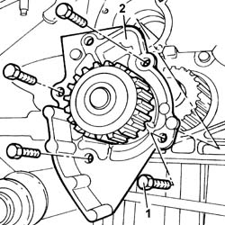

1088C12 WATER PUMP - R+R FOR VERSIONS WITH AIR CONDITIONER
- Path
- Procedures > 10 ENGINE UNIT > 1088 ENGINE COOLING > 1088C WATER PUMP AND THERMOSTAT > 1088C12 WATER PUMP - R+R FOR VERSIONS WITH AIR CONDITIONER
- Kind
- repair procedure (removal / refitting; the operation number is the code)
- Applies to
- engines: 2.0 16V; all production periods
- Interactive page
- https://sloeber94.github.io/elrnDB-fDct/en/#/244000954
Applies to: engines: 2.0 16V; all production periods
 Removing
Removing
 Refitting
RefittingOp. 7055B54 UNDER-ENGINE GUARD - R R
Op. 1092C11 POWER STEERING PUMP DRIVE BELT - R R FOR VERSIONS WITH AIR CONDITIONER
Op. 1092B40 AIR CONDITIONER COMPRESSOR/ALTERNATOR DRIVE BELT - R + R
See in Op. 1092A12
See in Op. 1032D12
See in Op. 1032B14
- Position a suitable container for collecting the coolant.
1. Undo the fixing bolts (1a) and remove the water pump (1b).

Applies to: engines: 2.0 16V; all production periods
Refitting
Removing- Apply sealant to the engine water pump contact surfaces.
 | Description | Qty. | Component | Type | Classification |
|---|---|---|---|---|---|
. | Dow Corning 7091 | - | COOLANT PUMP | Silicone sealant | - |
- Place the water pump in position on the crankcase and tighten the fixing bolts.
 | Value - daNm | Fastening | Component | Ø |
|---|---|---|---|---|
. | 1,2 | Bolt | COOLANT PUMP | - |
See in Op. 1032B14
See in Op. 1032D12
See in Op. 1092A12
Op. 1092B40 AIR CONDITIONER COMPRESSOR/ALTERNATOR DRIVE BELT - R + R
Op. 1092C11 POWER STEERING PUMP DRIVE BELT - R R FOR VERSIONS WITH AIR CONDITIONER